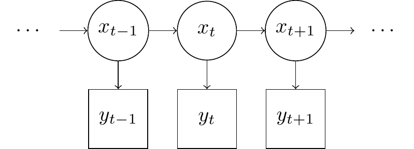
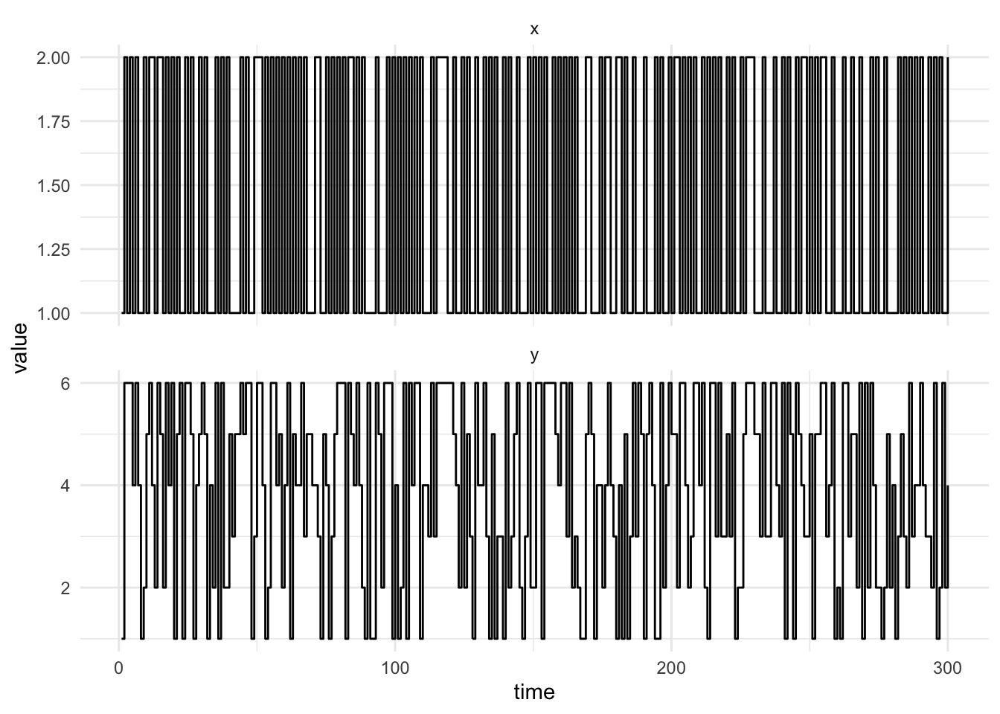
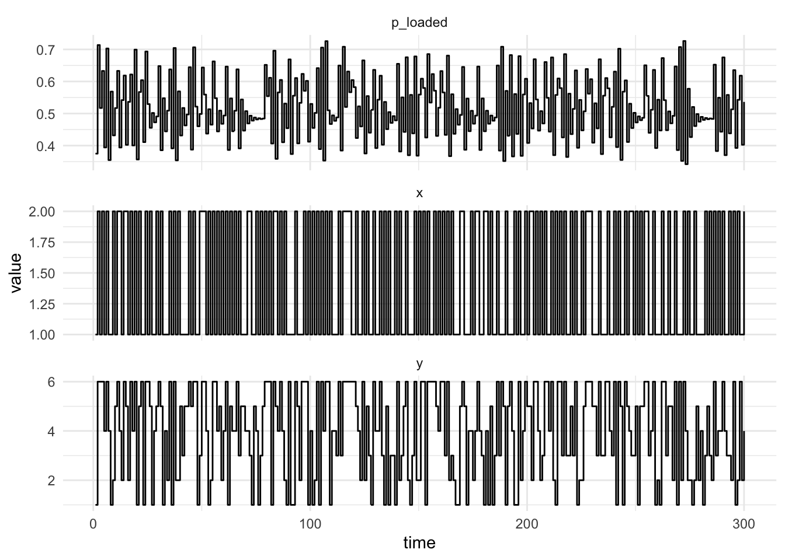
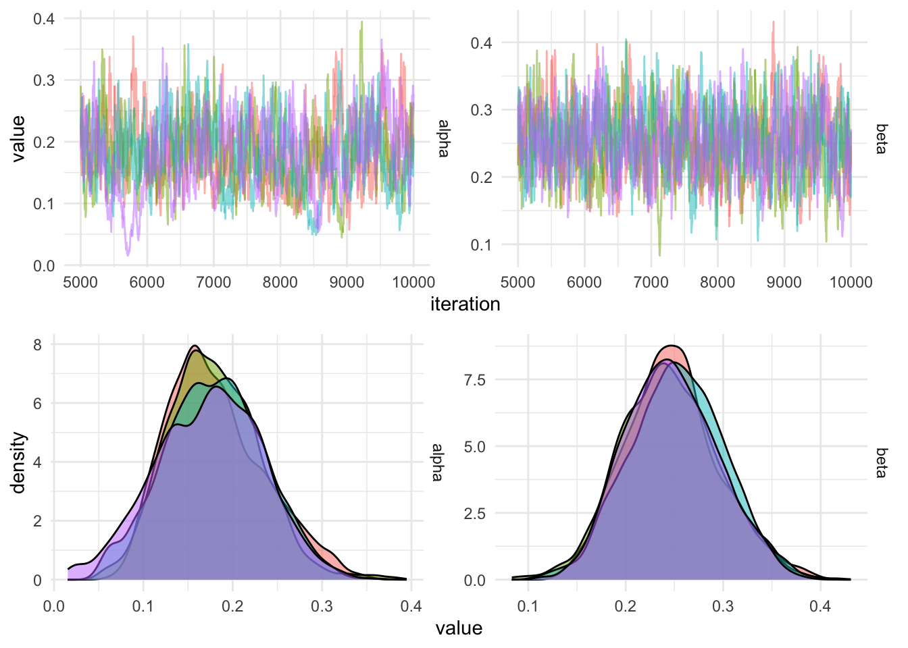

![]()

The hidden Markov model is a state-space model with a discrete latent state, \(x_{1:T}\) and noisy observations \(y_{1:T}\). The model can be described mathematically as
\[p(y_{1:T}, x_{1:T}) = p(x_1)p(y_1|x_1)\prod_{t=2}^Tp(y_t|x_t)p(x_t|x_{t-1})\]
Where \(y_{1:T} = y_1, \dots, y_T\) represents the sequence of observed values and \(x_{1:T} = x_1, \dots, x_T\) is the sequence of latent, unobserved values. The state space is assumed to be finite and countable, \(X \in \{1,\dots,K\}\) and the time gaps between each observation are constant. The observation distribution can be either continuous or discrete.
The model can be visualised using a state-transition diagram where observed nodes are rectangular and latent nodes are circular. The arrows represent any transitions which can be made and also convey conditional independence assumptions in the Model. The state forms a first order Markov process, which means \(p(x_t|x_{t-1},\dots,x_1) = p(x_t|x_{t-1})\) and each observation is conditionally independent of all others given the corresponding value of the latent state at that time, \(y_t \perp\!\!\!\perp y_{1:t-1},y_{t+1:T}\)
Example: The occasionally dishonest casino
The casino can choose to use a fair dice, in which case the observation distribution is categorical with probabilities \(p = \{\frac{1}{6}, \frac{1}{6}, \frac{1}{6}, \frac{1}{6}, \frac{1}{6}, \frac{1}{6}\}\). The casino can also choose a loaded dice which has the following probabilities, \(p = \{\frac{1}{10}, \frac{1}{10}, \frac{1}{10}, \frac{1}{10}, \frac{1}{10}, \frac{1}{5}\}\), hence it is more likely to roll a six with the loaded dice.
We want to infer when the casino is using the loaded dice, the latent state \(x \in \{L, F\}\) for loaded and fair respectively. We assume we already know the transition matrix
\[ P = \begin{pmatrix} \alpha & 1 - \alpha \\ 1 - \beta & \beta \end{pmatrix}. \]
build_transition_matrix <- function(theta) {
a <- theta[1]; b <- theta[2]
matrix(c(a, 1 - a, 1 - b, b), byrow = T, nrow = 2)
}The observation distribution is \(p(y_t|x_t = j)\). This implies we have a two element vector since the state can take one of two values \(j = \{L, F\}\).
observation <- function(y) {
c(ifelse(y == 6, 1 / 5, 1 / 10), 1 / 6)
}normalise <- function(a) {
a / sum(a)
}
sim_observation <- function(x) {
ifelse(
x == 1,
sample(6, size = 1),
sample(6, size = 1, prob = normalise(c(rep(1, times = 5), 5)))
)
}
transition <- function(x, P) {
sample(2, size = 1, prob = P[x, ])
}
sim_markov <- function(n, P) {
x <- numeric(n)
y <- numeric(n)
x[1] <- 1
y[1] <- sim_observation(x[1])
for (i in seq_len(n - 1)) {
x[i + 1] <- transition(x[i], P)
y[i + 1] <- sim_observation(x[i + 1])
}
tibble(time = seq_len(n), x, y)
}We can simulate data from this process by specifying values of the parameters, \(\alpha = 0.3\) and \(\beta = 0.1\). This means if the casino is using the loaded dice we will transition to the fair dice with probability \(1 - \alpha\) and if the casino is using the fair dice there is a \(1 - \beta\) probability of transitioning to the loaded dice. The algorithm to simulate from this Hidden Markov model is
- Specify the initial state of the dice, \(x_1 = L\)
- Simulate an initial observation conditional on the dice used, \(y_1 \sim p(y_1|x_1)\)
- Simulate the next transition by drawing from a categorical distribution with probabilities corresponding to the row of the transition matrix corresponding the current state, \(P_{x_t, \cdot}\)
- Simulate an observation conditional on the state, \(y_t \sim p(y_t|x_t)\)
- Repeat 3 - 4 until the desired number of realisations are simulated
a <- 0.3
b <- 0.1
P <- build_transition_matrix(c(a, b))
sims <- sim_markov(300, P)The plot below shows 300 simulations from the occasionally dishonest casino.
sims %>%
pivot_longer(c("x", "y"), names_to = "key", values_to = "value") %>%
ggplot(aes(x = time, y = value)) +
geom_step() +
facet_wrap(~key, ncol = 1, scales = "free_y")
Filtering
Now we wish to identify when the casino is using the loaded dice. We can use the forward filtering algorithm. The first step of the forward algorithm is to the prediction step:
\[p(x_t = k|y_{1:t-1}) = \sum_{j=1}^K p(x_t = k|x_{t-1}=j)p(x_{t-1}=k|y_{1:t-1})\]
Then we observe a new value of the process \(y_t\), and perform the update step where we apply Bayes’ Theorem
\[ \begin{aligned} p(x_t = k \mid y_{1:t}) = p(x_t = k\mid y_t,y_{1:t-1}) &= \frac{p(y_{t}|x_t = k, y_{1:t-1})p(x_t = k|y_{1:t-1})}{p(y_{t})} \\ &= \frac{p(y_{t}|x_t = k)p(x_t = k|y_{1:t-1})}{\sum_{j=1}^Kp(y_{t}|x_t = j)p(x_t = j|y_{1:t-1})} \end{aligned} \]
Which can be calculated recursively by defining \(\alpha_t(k) = p(x_t = k \mid y_{1:t})\) then we have the recursive update
\[\begin{aligned} \alpha_t(k) &= p(y_{t}|x_t = k)p(x_t = k|y_{1:t-1}) \\ &= p(y_{t}|x_t = k)\sum_{j=1}^Kp(x_t = k|x_{t-1} = j)p(x_{t-1}\mid y_{1:t-1})\\ &= p(y_{t}|x_t = k)\sum_{j=1}^Kp(x_t = k|x_{t-1} = j)\alpha_{t-1}(k) \end{aligned}\]
Essentially we have use the posterior of the previous time point, \(\alpha_{t-1}(k)\) as the prior for next observation. Then we advance the latent-state using the transition distribution \(p(x_t = k|x_{t-1} = j)\) and calculate the likelihood of the observation at time \(t\) using the observation distribution \(p(y_{t}|x_t = k)\).
To implement the forward algorithm in R we can use a higher-order function, a fold, from the R package purrr. A higher-order function is a function which accepts a function as an argument or returns a function instead of a value such as a double or int. This might seem strange at first, but it is very useful and quite common in statistics. Consider maximising a function using an optimisation routine, we pass in a function and the initial arguments and the optimisation function and the function is evaluated at many different values until a plausible maximum is found. This is the basis of the optim function in R.
Higher-order functions can be motivated by considering a foundational principle of functional programming, to write pure functions which do not mutate state. A pure function is one which returns the same output value for the same function arguments. This means we can’t mutate state by sampling random numbers, write to disk or a database etc. Advanced functional programming languages, such as Haskell, encapsulates this behaviour in Monads. However, Monads and other higher-kinded types are not present in R. While we can’t use all the useful elements of functional programming in R, we can use some, such as higher-order functions.
One result of avoiding mutable state is that we can’t write a for-loop, since a for-loop has a counter which is mutated at each iteration (i = i + 1). To overcome this apparent obstacle we can use recursion. Consider the simple example of adding together all elements in a vector, if we are naive we can write a for-loop.
seq <- 1:10
total <- 0
for (i in seq_along(seq)) {
total = total + seq[i]
}
total[1] 55This implementation has two variables which are mutated to calculate the final results. To avoid mutating state, we can write a recursive function which calls itself.
loop <- function(total, seq) {
if (length(seq) == 0) {
total
} else {
loop(total + seq[1], seq[-1])
}
}
loop(0, 1:10)[1] 55R does not have tail-call elimination and hence this recursive function will not work with long sequences, however it does not mutate any state. We can generalise this function to be a higher-order function.
fold <- function(init, seq, f) {
if (length(seq) == 0) {
init
} else {
fold(f(init, seq[1]), seq[-1], f)
}
}Here the function fold applies the user-specified binary function f to the initial value init and the first element of the sequence. The result of applying f to these values is then used as the next initial value with the rest of the sequence. We can use this to calculate any binary reduction we can think of.
fold(1, seq, function(x, y) x * y)[1] 3628800This example is equivalent to the reduce function in purrr. purrr::reduce by default can be used to combine the elements of a vector or list using a binary function starting with the first element in the list. For instance we can calculate the sum of a vector of numbers
purrr::reduce(1:10, function(x, y) x + y)[1] 55We can also use the function shorthand provided in purrr, where function(x, y) x + y can be written ~ .x + .y.
Other arguments provided to the reduce function can change its behaviour such as reversing the direction by changing the .direction argument (which will not affect the above computation, since addition is associative, ie. \((1 + (2 + 3)) = ((1 + 2) + 3)\)). We can also provide an initial value (.init) to the computation, instead of starting with the first (or last) element of the list.
purrr::accumulate is similar to reduce, however it does not discard intermediate computations.
purrr::accumulate(1:10, `+`) [1] 1 3 6 10 15 21 28 36 45 55Hence, if we change the direction this will change the output.
purrr::accumulate(1:10, `+`, .dir = "backward") [1] 55 54 52 49 45 40 34 27 19 10These functions can appear strange at first, however they don’t suffer from common problems such as off-by-one errors when writing a for-loop with indexing.
The accumulate function can be used to write the forward algorithm by first writing a single step in the forward algorithm. The function forward_step accepts the current smoothed state at time t-1, alpha, and the observed value at time t, y. The arguments observation and P represent the observation distribution and the transition matrix respectively and remain constant in this example
forward_step <- function(alpha, y, observation, P) {
normalise(observation(y) * t(P) %*% alpha)
}The forward algorithm can then be written using the accumulate function by first calculating the initial value of alpha and using this as the value .init then the function forward_step is used with the values of observation and P set. accumulate then takes uses the initial value, .init and the first value of the observations, ys (technically the second since we use the first to initialise alpha) to produce the next alpha value. This new alpha value is passed to the next invocation of forward_step along with the next observed value and so on until the observation vector is exhausted.
forward <- function(ys, x0, observation, P) {
alpha <- normalise(observation(ys[1]) * x0)
purrr::accumulate(
ys[-1],
forward_step,
observation = observation,
P = P,
.init = alpha
)
}We assume that the dice used for the initial roll can be either loaded or fair with equal probability.
forward_path <- forward(sims$y, x0 = c(0.5, 0.5), observation, P)filtered_path <- purrr::map_dbl(forward_path, which.max)tibble(
time = seq_len(length(filtered_path)),
filtered_state = filtered_path,
p_loaded = purrr::map_dbl(forward_path, ~ .[1])
) %>%
inner_join(sims, by = "time") %>%
pivot_longer(c("x", "y", "p_loaded"), names_to = "key", values_to = "value") %>%
ggplot(aes(x = time, y = value)) +
geom_step() +
facet_wrap(~key, ncol = 1, scales = "free_y")
Parameter inference
We can calculate the log-probability of the evidence using the forward algorithm, this is the sum of un-normalised filtering distribution
\[\log p(y_{1:T}) = \log \sum_{i=1}^T\sum_{j=1}^K p(x_t=j\mid y_{1:t-1})p(y_t|x_t = j)\]
This can be used in a Metropolis-Hastings algorithm to determine the posterior distribution of the parameters in the transition matrix, \(\alpha\) and \(\beta\). We can keep a running total of log-likelihood by returning a list from the forward step containing the log-likelihood and the posterior probability of the states given the observation.
ll_step <- function(state, y, observation, P) {
unnorm_state <- observation(y) * t(P) %*% state[[2]]
list(
state[[1]] + sum(log(unnorm_state)),
normalise(unnorm_state)
)
}To return only the log-likelihood we can use purrr::reduce.
log_likelihood <- function(ys, x0, observation, P) {
alpha <- normalise(observation(ys[1]) * x0)
init <- list(0, alpha)
purrr::reduce(ys, function(x, y) ll_step(x, y, observation, P), .init = init)[[1]]
}We can use this marginal-likelihood in a Metropolis-Hastings algorithm. We define the prior on the parameters of the transition matrix to be independent Gamma distributions with shape, \(\alpha = 3\), and rate \(\beta = 3/0.1\). The log-posterior is the sum of the log-likelihood calculated using the forward filtering algorithm and the log-prior.
log_prior <- function(theta) {
sum(dgamma(theta, shape = 3, rate = 3 / 0.1, log = T))
}
log_posterior <- function(theta) {
transition_matrix <- build_transition_matrix(theta)
log_likelihood(sims$y, c(1, 0), observation, transition_matrix) + log_prior(theta)
}The proposal distribution is a normal centered at the un-constrained value of the parameter. We use the logit function to transform \(\alpha\) and \(\beta\) from \(\operatorname{logit}:[0, 1] \rightarrow \mathbb{R}\) then propose using a Normal distribution centered as the un-constrained value and proceed to transform the parameter back to the original scale using the logistic function, \(\operatorname{logistic}:\mathbb{R} \rightarrow [0, 1]\).
logistic <- function(x) {
1 / (1 + exp(-x))
}
logit <- function(p) {
log(p / (1 - p))
}
proposal <- function(theta) {
a <- theta[1]; b <- theta[2]
transformed <- logit(c(a, b))
prop <- rnorm(2, mean = transformed, sd = 0.1)
logistic(prop)
}init_theta <- c(a, b)
names(init_theta) <- c("alpha", "beta")
iters_metropolis <- metropolis(
theta = init_theta,
log_posterior,
proposal,
m = 1e4,
chains = 4,
parallel = T
)Registered S3 method overwritten by 'future':
method from
all.equal.connection parallellyWarning: package 'future' was built under R version 4.3.3Warning: package 'purrr' was built under R version 4.3.3Warning: UNRELIABLE VALUE: Future (NULL) unexpectedly generated random numbers
without specifying argument 'seed'. There is a risk that those random numbers
are not statistically sound and the overall results might be invalid. To fix
this, specify 'seed=TRUE'. This ensures that proper, parallel-safe random
numbers are produced. To disable this check, use 'seed=NULL', or set option
'future.rng.onMisuse' to "ignore".We draw 10,000 iterations from the Metropolis algorithm, the parameter diagnostics are plotted below.
actual_values <- tibble(
parameter = c("alpha", "beta"),
actual_value = c(a, b)
)
iters_metropolis %>%
group_by(chain) %>%
mutate(iteration = row_number()) %>%
filter(iteration > 5e3) %>%
pivot_longer(3:4, names_to = "parameter", values_to = "value") %>%
plot_diagnostics()
Citation
BibTeX citation:
@online{law2020,
author = {Law, Jonny},
title = {Functional {Programming} and {Hidden} {Markov} {Models}},
date = {2020-05-01},
langid = {en}
}
For attribution, please cite this work as:
Law, Jonny. 2020. “Functional Programming and Hidden Markov
Models.” May 1, 2020.